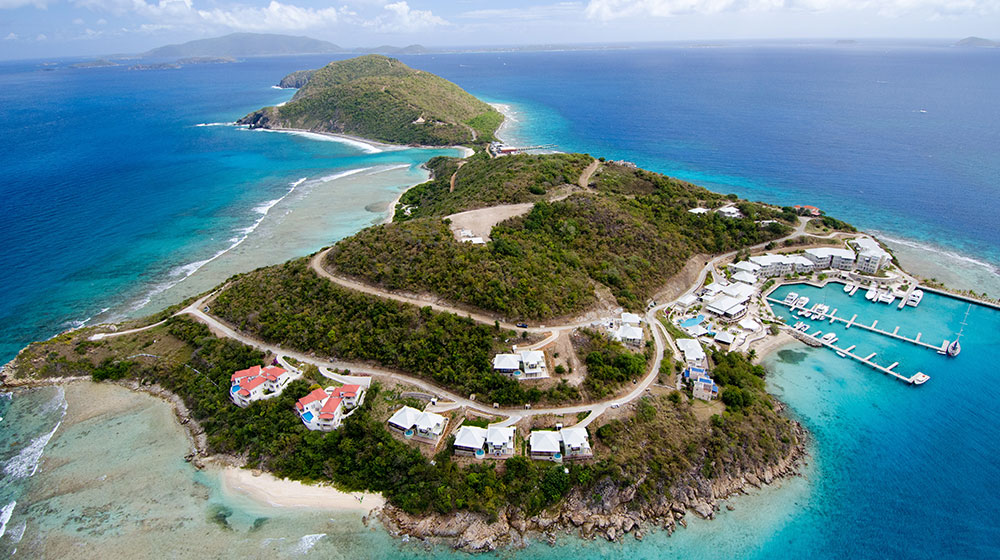
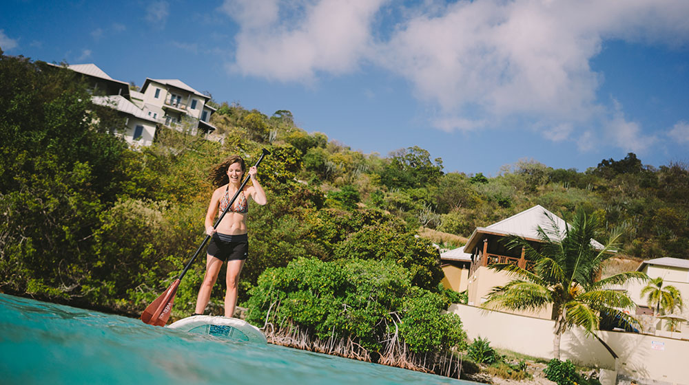
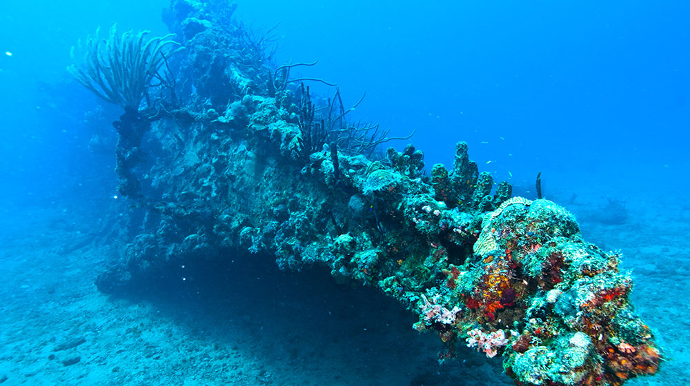

Year-round tropical climate. Balmy breezes. Pristine beaches. Spellbinding waters. Scrub Island is the perfect outdoor playground for water sports, hiking and so much more. Enjoy all there is to do on our private paradise.
See Scrub and the neighboring islands from a different point of view. Explore our 230-acre volcanic island on foot. You’ll experience elevations soaring over 400 feet, panoramic views, and indigenous plant life, including the ixora flower and a variety of cacti. You shouldn’t leave the island without seeing the sunrise from the top of Big Scrub. Be sure to contact your Scrub Island Resort Concierge for directions and details.
The sport of paddle boarding has become increasingly popular over the years and with good reason. It’s a great full body workout that combines strength and cardio and improves balance. Here in the BVI, it’s also a fantastic way to see the waters and marine life surrounding Scrub Island. To try your hand at paddle boarding, go to Pavilion Beach, where we have a number of boards available for our guests.
If you’re looking to spend some time underwater in the British Virgin Islands, Scrub Island Resort can take you there. Through Dive BVI, conveniently located in Marina Village, we can arrange one- and two-tank dive trips, private dives, and more. There are also scuba diving instructional courses available, including courses for first timers, full certifications, and advanced diver training.